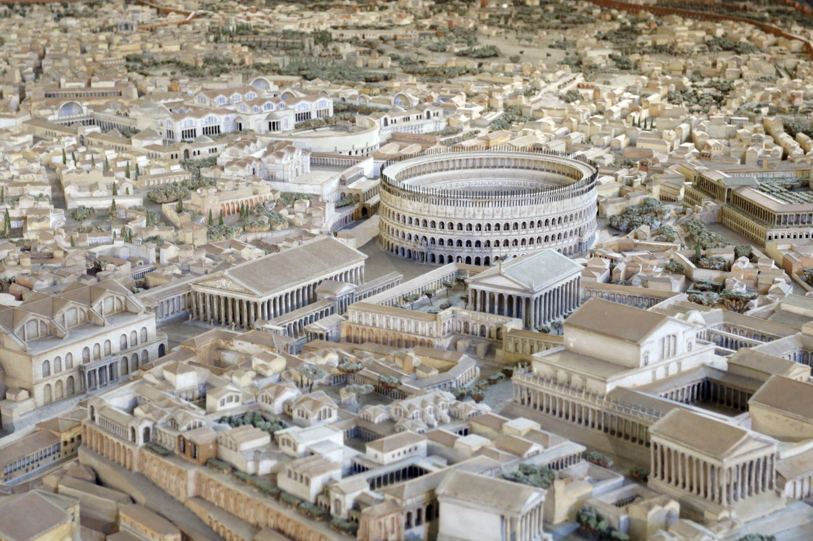

Indian Architecture
Indian architecture has a long and rich history. It includes temples, palaces, monuments and other impressive structures.
Many Indian buildings are decorated with detailed patterns and beautiful architectural elements.

Indian architecture has a long and rich history. It includes temples, palaces, monuments and other impressive structures.
Many Indian buildings are decorated with detailed patterns and beautiful architectural elements.
Ancient Greek architecture is famous for its temples, columns and balanced proportions.
Greek architects developed several architectural styles that influenced architecture around the world.

Roman architecture is famous for arches, domes, bridges, roads and large public buildings.
Roman engineers developed advanced construction techniques that influenced architecture for centuries.